Referensi: enam gambar milik pengguna. Implementasi: project Android Studio yang sama, Kotlin dan XML Views.
Ini perbandingan visual, bukan klaim identik pixel-per-pixel. System bar, ukuran perangkat, data dinamis, dan komponen UTS tambahan dapat berbeda. Screenshot tidak direkayasa untuk menyamai mockup.
Logo berasal dari SVG asli; ProgressBar dan kredit UTS dipertahankan.
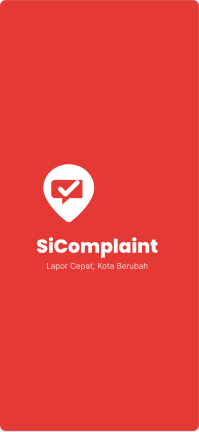
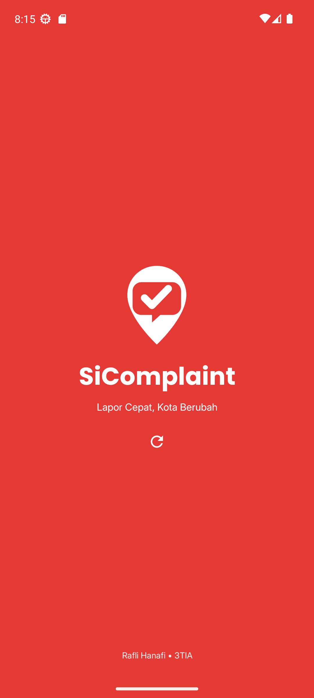
Poppins, logo asli, latar hangat, field putih, tombol merah dan outline. Checkbox ingat username dipertahankan.
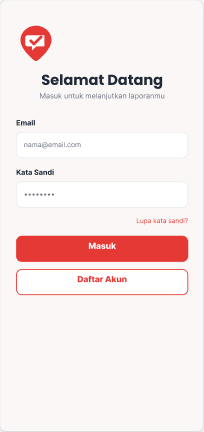
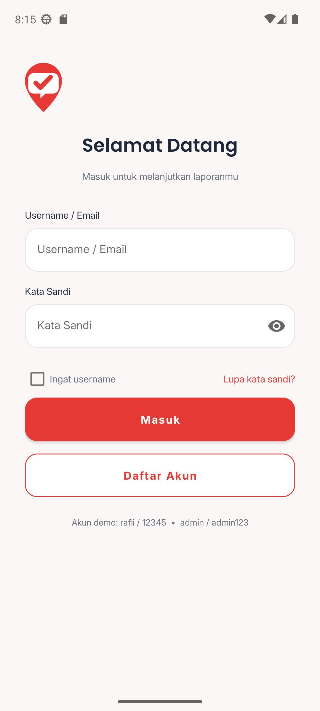
Hero merah, sapaan dan pencarian; empat tab dan FAB. ListView kategori tersedia setelah menggulir.
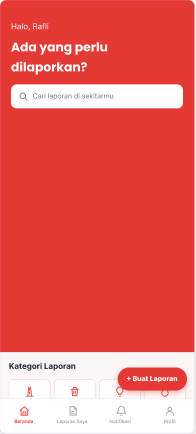
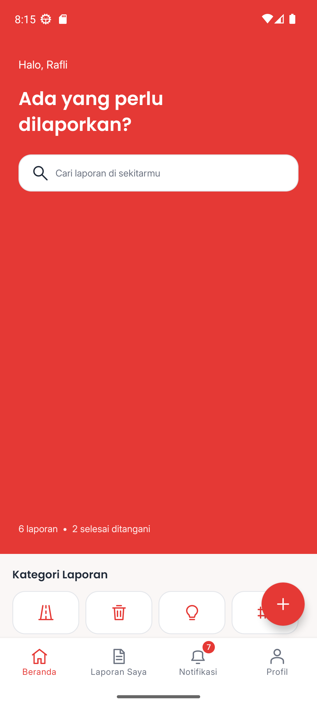
Foto, judul, kategori, deskripsi, lokasi; opsi UTS berada di bagian tambahan di bawah.
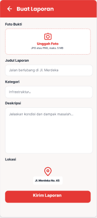
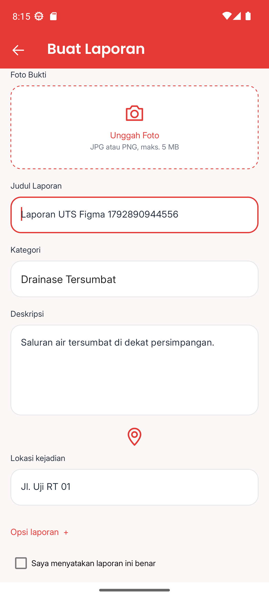
Foto jalan berasal dari screenshot referensi. Nilai judul/kategori/status berasal dari laporan terpilih.
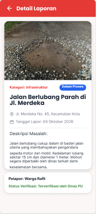
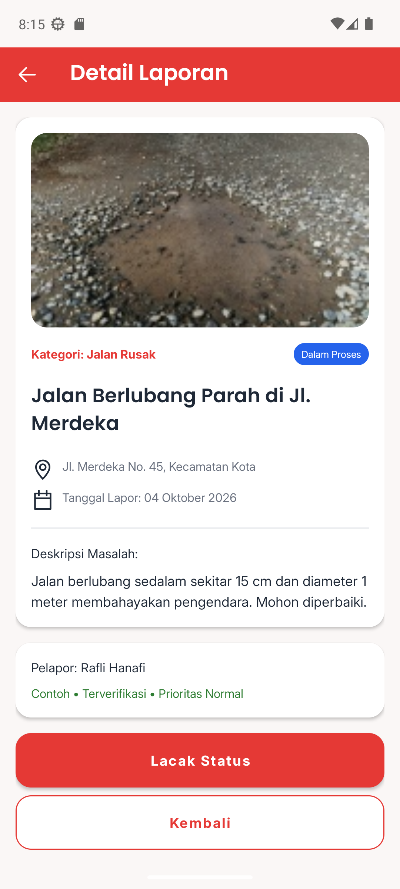
Empat tahap dengan lingkaran dan garis progres; tidak mengarang tanggal verifikasi yang tidak tersimpan.
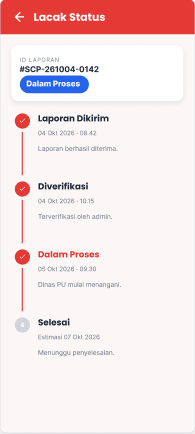
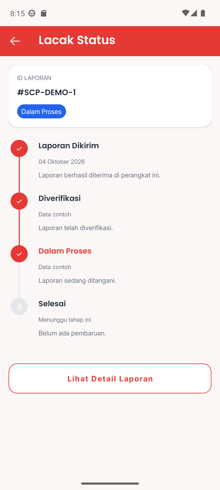
Ikon lonceng, judul, isi, tanggal, titik belum dibaca. Isi diturunkan dari laporan lokal.
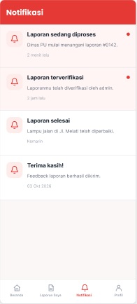
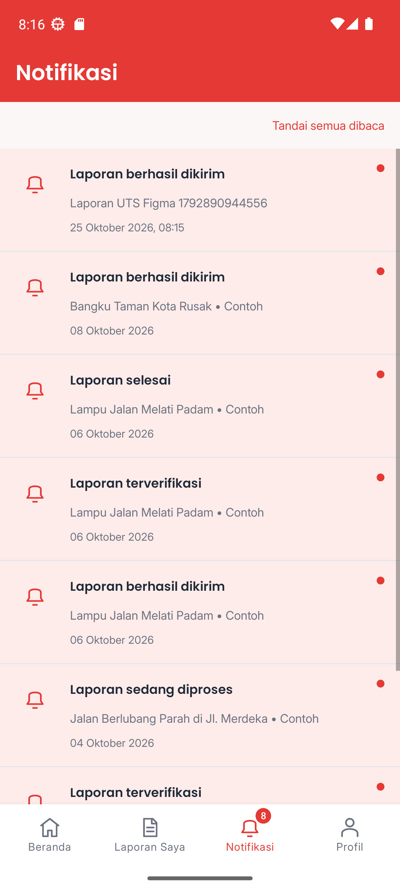
Header merah, avatar putih, statistik aktual dan baris menu; logout dipertahankan di bawah.
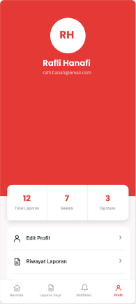
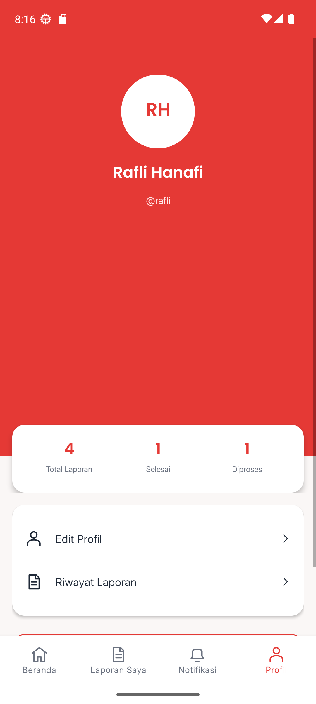
Tidak ada mockup khusus layar daftar pada delapan layar Sheet3. Kartu disusun berdasarkan Complaint Card pada Sheet4, dengan ListView dan Custom Adapter.
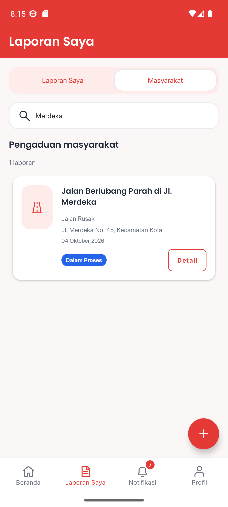